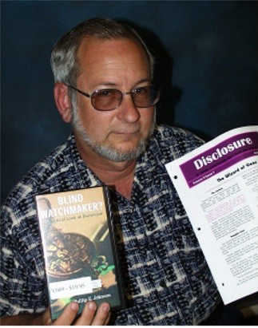

But we should not judge the merit of an argument on the profession of the proponent. Let's look at his argument. He claims,
But we should not judge the merit of an argument on the profession of the proponent. Let's look at his argument. He claims,
| About Us - June 2001 |
| by Do-While Jones |
|
Science Against Evolution was incorporated on May 16, 1996. The business reporter for our local newspaper contacted me in April to get information for an article about our impending fifth anniversary. She wrote what we felt to be an excellent article about our goals and activities. But rather than bury it back in the business section, the editor of The Daily Independent chose to put it (along with a large picture of me) smack dab in the middle of the front page of the April 22 Sunday paper. This provoked a series of letters to the editor which we would like to tell you about.
We wrote a letter to the editor, which was not published. That's okay because the letter really was to the editor, and not to the reading public at large. In it we expressed thanks for the excellent quality, placement, and timing of the article. The article appeared just six days before our monthly Fourth Friday Free Film. Attendance at the meeting was double the usual attendance. Several people who had never attended before came to see the video. The newspaper article was far more effective than any advertising we had ever done. We also told the editor that we would not be responding in the Letters to the Editor column. We have our newsletter and web page upon which we can present our views. We encouraged the editor to print letters from both sides, giving the forum to other people who would not otherwise have a chance to express their opinions. We are telling you this because we don't want you to think that The Daily Independent is not letting us respond to criticism. |
 Daily Independent photo by Ryan Carpenter. |
|---|
The first few letters published after the Sunday article appeared were, how shall we put it? Nasty. Yes, "nasty" pretty much sums it up. For the most part, the letters were nothing more than attacks against me personally. One letter began,
|
Your article headlined "Scientist Takes Issue With Theory of Evolution" was an absolute mishmash of bafflegab as would be expected from R. David Pogge. Let's start with that description of him as a "Scientist." There is a huge question as to Pogge's credentials as a scientist based on the content of his own website, ScienceAgainstEvolution.org. 1 |
The tirade continues in this vein, with only one technical argument. He said there was an error in the article which presents the argument that "land tides" cause the moon to recede from Earth. That writer, apparently in his haste to "Scroll down that page a long way until you come to a drawing of the earth and the moon" didn't read what he was scrolling over. If he had, he would have realized that we were repeating an argument made by an evolutionist so that we could show why it was wrong. It was the evolutionist's faulty logic that he correctly refuted, but incorrectly attributed to me.
Another letter ended with this attack not only on me, but on all electronic engineers.
| In short, I would urge anyone who is interested in biology, zoology, physics, astronomy, anthropology, cosmology and evolution to read works by scientists who actually work in those fields. I suspect they would know more about these complex issues than would an electrical engineer. 2 |
We doubt that paragraph scored big points with any of the electrical engineers who read The Daily Independent. That letter was written by a professional movie critic, who naturally "would know much more about these complex issues than an electrical engineer." But we should not judge the merit of an argument on the profession of the proponent. Let's look at his argument. He claims,
| The fact that "science has proved life doesn't come from death" is completely irrelevant when discussing the theory of evolution. 3 |
How can one argue with logic like that? Actually, we tried once. In personal email messages to him we have pointed out that, according to the theory of evolution, there was a time billions of years ago when there was no life on Earth. There is life on Earth now. Therefore the theory of evolution implies that, at some time in the past, some inanimate matter had to have come to life. That makes the origin of life not only relevant, but essential to the theory of evolution. Unfortunately, he still doesn't see the relevance.
Another writer said,
|
Mr. Pogge and his organization Science Against Evolution represent the worst form of intellectual charlatanism--claiming to be scientific but knowing nothing of science and carrying forth instead a purposeful agenda of obfuscation. A close second in this sorry issue is that The Daily Independent saw fit to legitimize such poppycock by giving it front-page press.
Science Against Evolution and Mr. Pogge are not interested in honest scientific debate of evolution, archeology, geology or any field of science. To this end they give their opponents absurd evolutionary "tests," such as making Frosty the Snowman come to life or making a dog give birth to kittens. If their opponents can't perform these "tests," then obviously the entire field of science under debate is wrong and Mr. Pogge's faith-based viewpoint is, of course, right by default. In any intellectual arena, Science Against Evolution and its "tests" are not given a passing glance. But unfortunately, there are enough people in this nation who have no grounding in science and thus will believe any idiocy from self-proclaimed experts. And The Daily Independent aided and abetted in this dumbing down of America by printing an "objective article" on one of these pseudoscientific groups. 4 |
Gee, that almost sounds like a personal invitation to debate. If this guy could calm down long enough to engage in a rational discussion without all the personal attacks, it might be interesting.
We wonder what he means by an "intellectual arena?" We suspect it means "any gathering where evolution is accepted as fact." He would have you believe that no serious scientist disbelieves in evolution. In a couple of months we are planning an essay on "real scientists" who don't believe in evolution, so we won't say much more on the topic now. (This newsletter is well over its six page limit already.)
Sometimes when we have had our booth at public gatherings (the Community Dinner, Desert Empire Fair, or Maturango Junction), I have worn a white lab coat with the Science Against Evolution logo on it as a joke. People are supposed to notice that I am wearing a lab coat. Therefore, I must be a scientist. Therefore, everything I say must be true. I do this to point out how easy it is to be a self-proclaimed expert. One should not believe something just because a scientist says it, or because a minister says it, or because you read it in The Daily Independent. One should examine every idea carefully and objectively.
On our web page we joke that there are only two documented cases of dead material coming to life--Pinocchio and Frosty the Snowman. We hope that people will react to the joke by thinking, "Oh yeah? Well, there are lots of documented cases where inanimate material comes to life. For example there's ... uh ... well ... uh ... There must be some examples, but I just can't think of them right now!"
We feel the joke has more impact than the dry statement, "It has never been observed in nature, or in the laboratory, that any inanimate material has ever come to life through any natural process." The joke must work as intended because so many people object to it. They would not object so much if it were not a very convincing argument.
Likewise, the dog having a kitten quip makes a serious point that makes evolutionists very uncomfortable. It is really a variation on the old question, "Which came first, the chicken or the egg?" Unless there was a chicken that was created as an adult bird, every chicken had to have come from an egg. That egg had to have been laid by a previously existing chicken, which had to have come from an egg laid by another previously existing chicken. It is a cycle there that has no beginning. The only way you can get out of that cycle is for a dinosaur to lay an egg, from which a bird hatched. There are, in fact, evolutionists who claim that dinosaurs weren't just the ancestors of birds, but actually were birds, to try to make this claim seem less ridiculous. Even so, it is almost as silly to believe that a pelican laid an egg and a sea gull hatched from it, as it is to believe that once upon a time a dog had kittens.
Of course evolutionists will cry, "Show me a book that says a lizard laid and egg and a bird hatched out." Of course we can't, because we know of no such book that makes such a silly statement. They don't dare say it explicitly. But deep down inside everyone knows that the theory of evolution depends upon the fact that the first animal of every species that has ever existed had to have been born (or laid) by some other species.
Following the series of personal attacks, there were some articles in which several people (only one of whom is a member of Science Against Evolution; some of whom I have never even met) came bravely to our defense. We were pleased to note that our defenders generally did not sink to the level of name-calling that our attackers had used. Instead, they reiterated the current scientific evidence against the theory of evolution. They did so at the risk of being attacked themselves. We appreciate and applaud their courage.
Finally, there were a couple of moderate letters. One writer, who believes "there is much evidence for bird evolution" said,
| First off, it is the THEORY of evolution, and theory must not be considered absolute fact. ... Second, I believe teaching the theory of evolution in secular schools, coupled with the teaching of creationism in the students' religious "temple" of choice will yield not only great scientists, but well rounded adults. 5 |
Another writer said,
| The theory of evolution is an evolving thing as more scientific evidence accumulates. It is true, as Mr. Pogge states, that "20th century science has extinguished the 19th century theory of evolution." Instead we have the 21th century theory of evolution, far more complete and fully supported than the original version, but still based on the same basic premises. 6 |
The theory of evolution certainly is evolving. It is a moving target. Some of the criticism we get is that we are refuting things that evolutionists don't believe any more. In light of last month's report on Kenyanthropus it hardly seems to us that today's theory is "more complete and fully supported." The theory of human evolution is in turmoil. Furthermore, it seems to us that there is greater disagreement about the origin of life than there ever has been in the past. Classification of species seems to be more controversial than it ever has been. If the current theory of evolution is so much better supported now than it has been in the past, why is there greater disagreement among evolutionists than ever before?
Of all the pro-evolution letters written to the editor, there were very few which had technical arguments. It is a pleasure to comment on them.
| However, biological evolution--the process that results in inheritable changes in a population spread over many generations--is an observable fact. A small change in a population, as when a type of insect develops resistance to an insecticide, is an example of "microevolution." 7 |
This is true, as far as it goes. It has been observed that a population of insects can develop a resistance to an insecticide. A population of bacteria can develop a resistance to antibiotics. But individual insects and individual bacteria can't. Applying DDT to an insect does not make it resistant. It either kills it, or it doesn't. The use of penicillin did not cause individual bacteria to evolve. Some bacteria were resistant to penicillin before penicillin was discovered. When bacteria were exposed to penicillin (and insects were exposed to DDT), those individuals that were already resistant survived to produce offspring who inherited the resistance to that particular toxin. After a few generations, all the members of the entire population (in that geographical area) were resistant. The members of the newer generations were no different from the members of the original population who happened to be resistant when the poison was first applied. All that changed was the relative number of resistant individuals. No new kinds of individuals evolved.
Creationists agree that the statistical makeup of a population will evolve over time in response to environmental factors. A change in the relative number of individuals with preexisting traits that allow them to survive in the new environment does not explain how those traits originated. There is no question that spraying DDT on a mixture of insects, some of whom are resistant to DDT and some who are not, will result eventually in a population of insects upon which DDT has no lethal effect. The question is where those DDT-resistant insects came from in the first place.
| Even most creationists, like Michael Denton, author of "Evolution: A Theory in Crisis," do not dispute the phenomenon of speciation and microevolution. But what creationists fail to understand is that small-scale (micro-evolutionary) changes like slightly thicker fins, can eventually result in large-scale (macro-evolutionary) changes. 8 |
His statement is partially true. We don't dispute speciation or microevolution. We have said so in several essays. The first time we said so was in Volume 1, Issue 4, (January 1997). Furthermore, we don't know of a single creationist who does dispute it. And it is also true that we don't believe small changes can eventually add up to large changes because small changes don't add up to large changes. A leg is not just a thick fin. Fins don't have bones in them. For a fin to turn into a leg, there would have to be some serious, creative changes to the DNA. There is no scientific evidence that DNA can spontaneously create new body parts.
Evolutionists claim that small changes can add up without limit. We say that there is scientific evidence that there is a limit to genetic change. We discussed that in our essay on The Kentucky Derby Limit.
| Some of the typical lines of evidence offered in support of common descent include observations of how species are distributed geographically; anatomical, embryological, and molecular similarities of organisms; the presence of vestigial structures; and the presence of transitional forms and gradual sequences in the fossil record. 9 |
These "lines of evidence" can be as easily dismissed as they were stated. The fact that you don't find penguins here in the Mojave Desert is hardly evidence of evolution. It is merely evidence that some species are better suited for some climates than others. Geographic isolation often does result in minor regional differences in the population at large, as we have already explained.
Anatomical similarity can be evidence of common design just as much as common ancestry, as we explained in the feature essay this month. The similarity of embryos is not nearly as great as it once was believed. The previous belief that embryonic development follows evolutionary history has largely been abandoned by evolutionists since the discovery that it was based on fraudulent drawings by Ernst Haeckel. We are surprised that the letter writer apparently didn't know this.
Most of the so-called vestigial (formerly useful, but now left-over, useless) organs have been found to be very useful. Scientists just didn't know what they were needed for years ago. They weren't vestigial at all.
We do agree, however, that there are a few truly vestigial organs. For example, there are some blind fish that live at great depths which have non-functional eyes. These blind eyes are the result of mutations that prevent the proper formation of eyes. In the deep ocean, where there isn't any light to speak of, blind eyes are not a serious disadvantage, so the fish survive anyway.
We know of no evolutionist who claims the blind eyes are eyes in the process of evolving. Vestigial organs are not evidence that DNA gains new information over many generations, as required by the theory of evolution. They are evidence that DNA loses information through imperfect reproduction. In other words, these blind eyes are examples of devolution rather than evolution.
We wonder what "transitional forms and gradual sequences in the fossil record" he is referring to. If there were such transitional forms and gradual sequences, you can be sure they would be displayed in biology textbooks and natural history museums everywhere. The 1972 evolutionary theory of Punctuated Equilibrium was proposed by paleontologists to explain why there are no gradual sequences in the fossil record.
We feel that the exchange of letters to editor is doing a good job of showing that the evolutionists really don't have science on their side. That's why they have to resort to name-calling. The few scientific arguments they present are either things that creationists already agree with (microevolution, and changes in the distribution of characteristics in a population), or things that evolutionary scientists have already rejected themselves. Evolution is losing the battle because science is against evolution.
| Quick links to | |
|---|---|
| Science Against Evolution Home Page |
Back issues of Disclosure (our newsletter) |
| Web Site of the Month |
Topical Index |
Footnotes:
1
The Daily Independent, April 26, 2001, "Article was a 'mishmash of bafflegab' and then some" page A4
(Ev+)
2
The Daily Independent, April 24, 2001, "Writer takes issue with ideas of anti-evolutionist" Page A4
(Ev+)
3
ibid.
4
The Daily Independent, May 9, 2001, "'Agenda of obfuscation' guides anti-evolution body", Page A4
(Ev+)
5
The Daily Independent,May 6, 2001, "More observations about the theory of evolution", Page A4
(Ev)
6
The Daily Independent, April 27, 2001, "Resident responds to story about anti-evolution group", Page A4
(Ev)
7
The Daily Independent, May 27, 2001, "Evolution versus creation debate continues", Page A4
(Ev+)
8
ibid.
9
ibid.